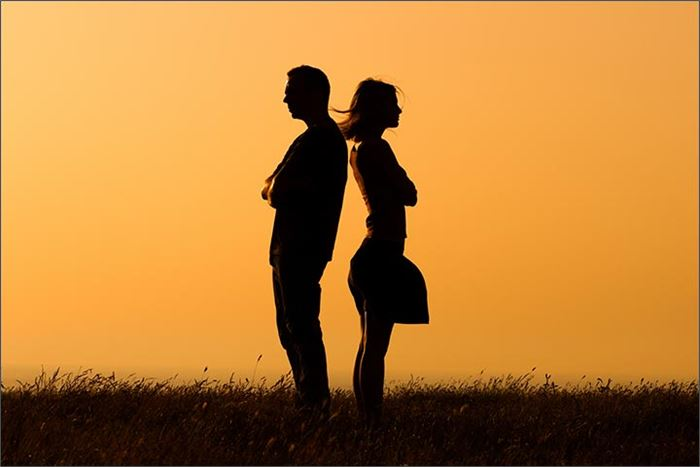
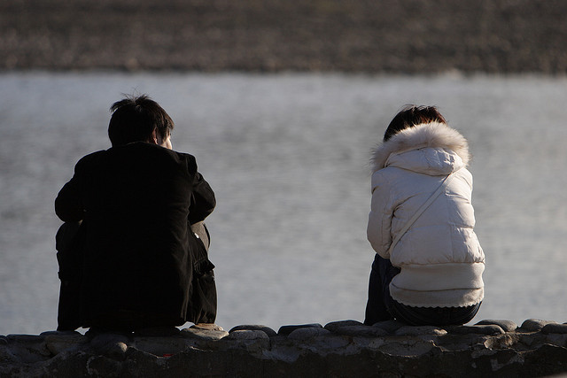
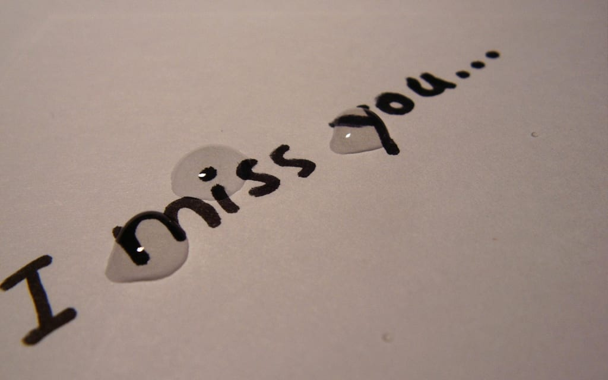

Stranger
You walked into my life and damn, you made a mark!!We had no idea about each other's existence and may be that was how it was supposed to be. I remember it was my birthday and i was in my black patiyala and a purple tshirt with a black shrug(and the nerdy hairstyle).Ofcourse i spoke to boys those days but you were an unfamiliar face in our class for me! All i knew about you was that you were Freeda's rumoured boyfriend. You were always a talented chunk solving maths, everyones common friend...No one was there in the class and you wanted to ask Aadhvika(then Akshata) some doubt.Well, she was busy and couldn't answer you!Uff! so i answered it and i guess you didn't expect that coming. I Still couldn't forget that you showed me a middle finger out of nowhere and said fuck off!
Aquaintance
To be honest, it was rough.I kinda hated you but then we slowly started talking and i started understanding how you had so many friends, why people loved you.You were genuine, smart, caring and you had that charishma which was attractive. And your smile; i dont know about others but it did melt me.I guess that year passed too soon.
Casual friends

We were in 8th when we atually started talking.I remember how you asked me permission to sit next to me(giggles).But that moment didn't last long.I guess universe had some other plans.The same day ma'am made you sit behind me.Though our convo was limited, I cherish every moment i spent with you!
Close friends
This was a very special stage of our friendship for me! I had actually started knowing you!When I began falling for you, I was good at ignoring the feelings at first.If Gautam and Arvind wouldn't have created a spark, then i guess i would have never confronted you! You too kept quite thinking it would harm our friendship.But, our friendship kept getting stronger by the day and so did my feelings.I was falling for myfriend(now best friend).You had become an important part of my life and i didn't want to lose you!I had to be honest with you for my own sanity.I’ve never met anybody like you and i guess i would never meet one!
Intimate friends
I have always been a believer of destiny. I am glad you’re able to handle me, which I applaud you...(hehehe). You’re there for me and that's what made me put all my trust in you.You give me advice and support me. You hold my hand when I need someone to keep me up. You believe in me.
If you were to ask me now where I think we stand, I would say you have become an integral part of my soul.You're my best friend and that tops everything. We need each other in our lives to keep things interesting.I will make one promise to you: You’re my best friend and, as such, I will always be there for you. I will continue to support you, help you, comfort you and be there when you need me for whatever reason.I'll be there for you......the universe will bring us together.I miss you like crazy... I miss all the moments spent with you in school,at college,outings and everything. I miss every inch of you.I miss you love!You mean the world to me Mr. Kumar!
You are my sanity, my laughter, my lust, my love, my comfort, my day and my night, my heat and cold and everything! I LOVE YOU!

I wanted to celebrate this day and everyday with you but as it's not possible.This is something I made for us to celebrate life..to celebrate us...to celebrate our seven years...Thank you for everything you do for me!Well, i m on my fast so i won't be able to eat it but i trust my baking skills(hahhahah) so....trust me it's good.And ya.. I ll eat your bite too...(heheehe)
And this is something which is very special for me.....
AND I.....FELL IN LOVE WITH MY BESTFRIEND!!!...
HAPPY FRIENDSHIP DAY LOVE!!!
Back to the top
Ayshath Asna ©Copyright